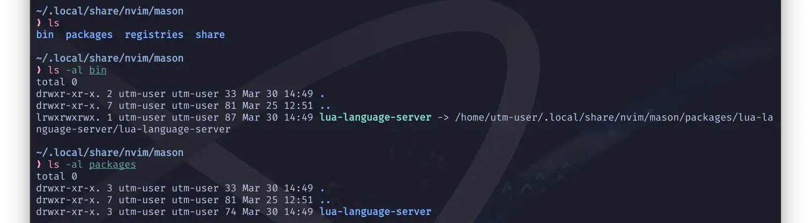
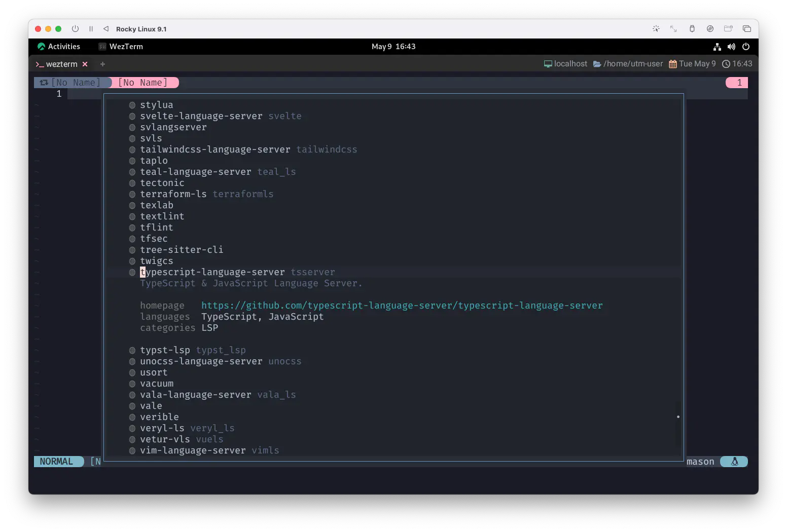
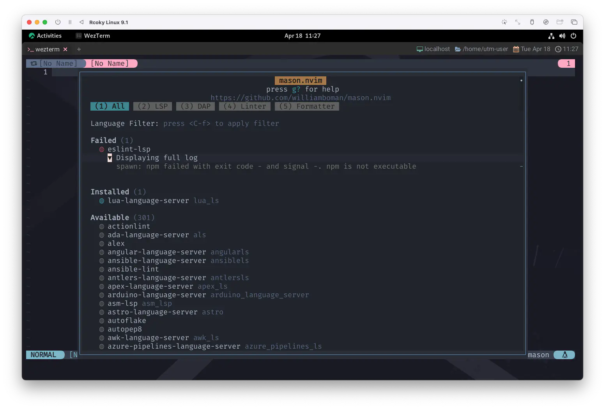
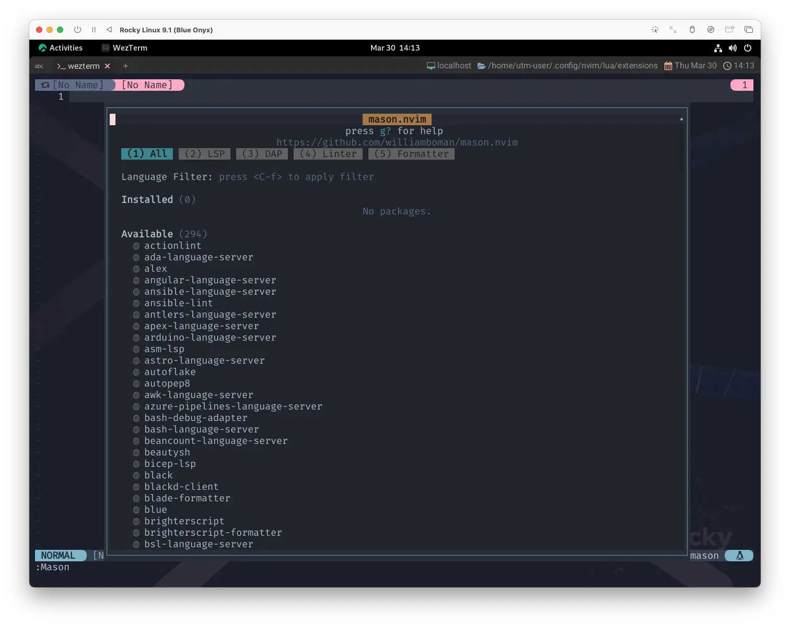
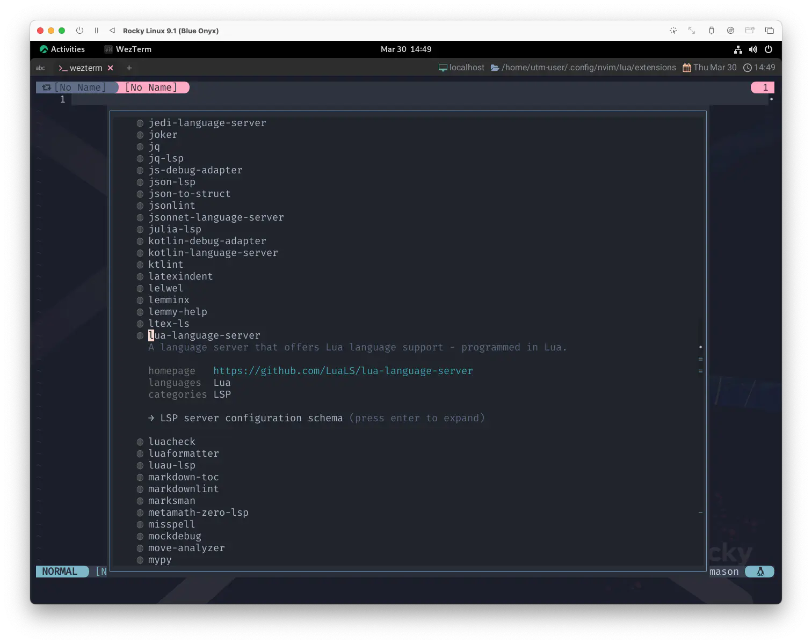
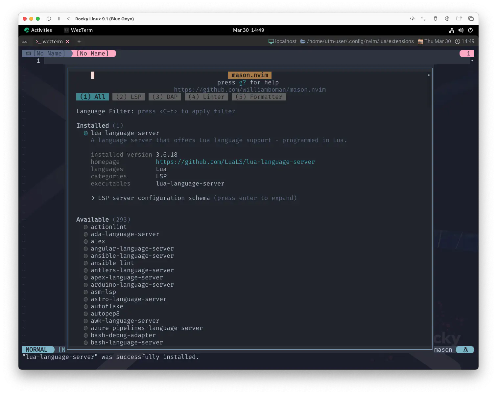
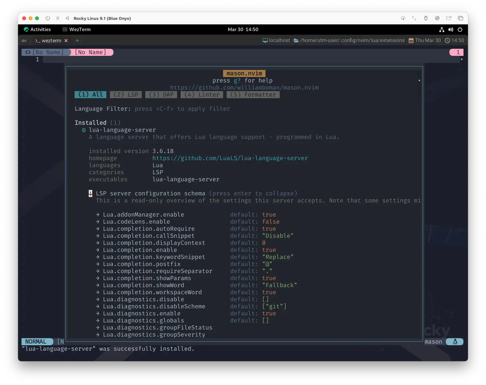

mason.nvim
さて、前回はnvim-lspconfigのセットアップを行いました。
Protocolは既に扱えるようになっているのですが、まだこの言葉で会話のできる相手がいません...😱
うぅ...欲しい...お友達欲しい...😭 彼氏彼女欲しい...🥹
...。
そうだ💡mason.nvimに登場してもらいましょう❗
Portable package manager for Neovim that runs everywhere Neovim runs. Easily install and manage LSP servers, DAP servers, linters, and formatters.
Neovimが動作する場所ならどこでも動作する、Neovim のポータブルパッケージマネージャです。 LSPサーバー、DAPサーバー、リンター、フォーマッターを簡単にインストール、管理することができます。
:help mason.nvim
言語関連機能に特化した "パッケージマネージャ" です。
これさえあれば、お友達だろうと彼氏彼女だろうと、もう作り放題です❗
Tommy used to work on the docks
Union's been on strike
トミーは 港で働いていた
ユニオンはストライキをしていた
He's down on his luck
It's tough, so tough
彼は運に見放されていた
辛かった とても辛かった
Introduction
いつも通り順番に読み進めて行きます。
Packages are installed in Neovim's :h stdpath by default. Executables are
linked to a single bin/ directory, which mason.nvim will add to the
Neovim's PATH during setup, allowing easy access for the builtin
shell/terminal as well as other 3rd party plugins.
パッケージは、デフォルトでNeovimの :h stdpath にインストールされます。
実行可能ファイルは bin/ ディレクトリにリンクされ、セットアップ時に mason.nvim が Neovim の PATH に追加するので、
内蔵のシェル/ターミナルやその他のサードパーティプラグインに簡単にアクセスできるようになります。
For a list of all available packages, see PACKAGES.md.
利用可能なすべてのパッケージの一覧は、PACKAGES.mdを参照してください。
こう言われてるんで、stdpathのヘルプとPACKAGES.mdも見てみましょう。
stdpath({what}) stdpath() E6100
Returns |standard-path| locations of various default files and
directories.
様々なデフォルトのファイルやディレクトリの標準的なパス位置を返す.
{what} Type Description
cache String Cache directory: arbitrary temporary
storage for plugins, etc.
config String User configuration directory. |init.vim|
is stored here.
config_dirs List Other configuration directories.
data String User data directory.
data_dirs List Other data directories.
log String Logs directory (for use by plugins too).
run String Run directory: temporary, local storage
for sockets, named pipes, etc.
state String Session state directory: storage for file
drafts, swap, undo, |shada|.
Example:
:echo stdpath("config")
Mason Package Index
まあ、言ってることはわかりますよね。わかるんですけど...。
少しフライングしちゃうんですが、わたしの環境では、インストールしたパッケージは~/.local/share/nvim/masonに配置されていきます。

Gina works the diner all day
Woking for her man
ジーナは一日中食堂で働く
彼のために
She brings home her pay for love
For love
彼女は稼いだ金を持って家に帰る 愛のために
そう 愛のために
Requirements
mason.nvim relaxes the minimum requirements by attempting multiple different utilities (for example, wget, curl, and Invoke-WebRequest are all perfect substitutes). The minimum recommended requirements are:
mason.nvimは、複数の異なるユーティリティを試すことで、最小要件を緩和しています。 (例えば、wget、curl、Invoke-WebRequestはすべて完璧な代用品です）。 最低限推奨される要件は以下の通りです：
- neovim >= 0.7.0
- For Unix systems: git(1), curl(1) or wget(1), unzip(1), tar(1), gzip(1)
- For Windows systems: pwsh or powershell, git, tar, and 7zip or peazip or archiver or winzip or WinRAR
Note that mason.nvim will regularly shell out to external package managers, such as cargo and npm. Depending on your personal usage, some of these will also need to be installed. Refer to :checkhealth mason for a full list.
mason.nvim は定期的に cargo や npm などの外部パッケージマネージャにシェルアウトすることに留意してください。 使い方によっては、これらのパッケージもインストールする必要があります。全リストは :checkhealth mason を参照してください。
これもやっぱりcheckhealthを確認しておきましょう。
よほどの言語プロフェッショナルでもない限り、たくさんのWARNINGが出てきちゃうと思いますが、
使っていない言語環境が入っていないのは「そりゃそうだー」としかならないので、気にしなくていいやつです😉
ここでは、「全リストを見ておきたい」ってだけなので❗
gitはmason.nvimが動いている時点で大丈夫だと思いますが、curl、tarあたりがOKになっていればひとまずは大丈夫...な、はず。
このあたりが欠けている場合であっても、brewだったり、apt・dnfを使えばすぐにインストールできるはずです。
例えば「JavaScriptやりたいからtypescript-language-serverほしいなー😆」ってなったとするじゃないですか。

mason.nvimはtypescript-language-serverのインストールにnpmを使用するんですね。
でも、もしnpmがまだインストールされていない状態でそれをやろうとしても、

spawn: npm failed with exit code - and signal -. npm is not executable
って言われちゃいます。まあ、わかってる人からすればこれも「そりゃそうだー」ではあるんですが、
「npmってなんやねん❗」とか
「node.jsをやろーゆーとんちゃうねん❗」とか
「ていうかTypeScript...❓Jav...、あれえー⁉️😱」ってなっちゃうかもしれません。
この辺りはある程度の経験値が必要になって来ると思うので、 躓いちゃったら周りの人に聞いてみましょう😉
We've got to hold on to what we've got
私達は 今あるものに しがみつくしかないの
It doesn't make a dirrerence
If we make it or not
上手くいっても いかなくても
違いなんてそんなにないよ
Setup
これもすごい簡単です。 わたしの場合はささやかな変更だけしていますが、しなくても全然平気です。
require('mason').setup {
ui = {
check_outdated_packages_on_open = false,
border = 'single',
},
}
簡単に書くと、以下のようなものです。
check_outdated_packages_on_open
falseにしておくと、masonのウィンドウを開いた時に新しいバージョンを自動で確認しなくなります。
border
UI ウィンドウに使用するボーダーを指定します。
nvim_open_win() と同じボーダー値を使用することができます。
なので、singleにしておくと、packerと統一感が出ていいかも〜😆
Install
そしたら、packerでのインストールもシンプル😉
use {
'williamboman/mason.nvim',
config = function() require 'extensions.mason' end,
}
We've got each other and that's lot for love
We'll gibe it a shot
とにかくやってみましょう
二人一緒だもん なんとかなるでしょ
Mason Window
ここまで出来れば、いつも通り:PackerSyncとかした後に
:Mason
ってするだけですね😆 
このウィンドウでの操作は、デフォルトで以下のようになっています。
keymaps = {
-- Keymap to expand a package
toggle_package_expand = "<CR>",
-- Keymap to install the package under the current cursor position
install_package = "i",
-- Keymap to reinstall/update the package under the current cursor position
update_package = "u",
-- Keymap to check for new version for the package under the current cursor position
check_package_version = "c",
-- Keymap to update all installed packages
update_all_packages = "U",
-- Keymap to check which installed packages are outdated
check_outdated_packages = "C",
-- Keymap to uninstall a package
uninstall_package = "X",
-- Keymap to cancel a package installation
cancel_installation = "<C-c>",
-- Keymap to apply language filter
apply_language_filter = "<C-f>",
},
要はこうですね😌
| key | description |
|---|---|
| return | カーソル位置のパッケージ情報を開く |
| i | カーソル位置のパッケージをインストールする |
| u | カーソル位置のパッケージを再インストール/アップデートする |
| c | カーソル位置のパッケージの新バージョンをチェックする。 |
| U | インストールされているすべてのパッケージの更新 |
| C | インストールされているパッケージのうち、どのパッケージが古くなっているかを確認する |
| X | カーソル位置のパッケージをアンインストールする |
| Ctrl-C | パッケージのインストールをキャンセルする |
| Ctrl-f | 適用言語フィルタ |
基本的にはiでインストールしたものをCUで更新管理するっていう使い方でいいと思います。
Install the Server Protocol
お待たせしました。初めてのお友達作りです。
初めてのお友達はやっぱりluaの Language Server❗キミに決めた😆
やり方は色々あると思うんですが、わたしはとりあえず検索からジャンプしちゃいます。
/lua
一応、情報を確認しておきましょう。lua-language-serverにカーソルが合ってるのを確認してreturn❗

対応するlanguagesはluaで、categoriesはLSPですね❗
これはぜひお友達になりたいと思うので、iをぽちっとな。
一番上に戻ってみると...❓ 
Installedのリストにlua-language-serverが加わりました❗もうお友達❗❗
つかまえたお友達は図鑑に登録されます。
なので、→にカーソルを合わせてreturnでさらに詳しい情報が見られます。

I'll take you all.
これでようやく会話のできるお友達をゲットだぜ❗😆 ...と思いきや、まだ何も話してくれません。
ちょっと捕まえ方が強引だったかな...🫨 それとも照れ屋さんなのかな❓😮
どうやら心を開いてもらって会話をするためには、もう1ステップ必要みたいですね。
ってことで、次回に続く... 🦖